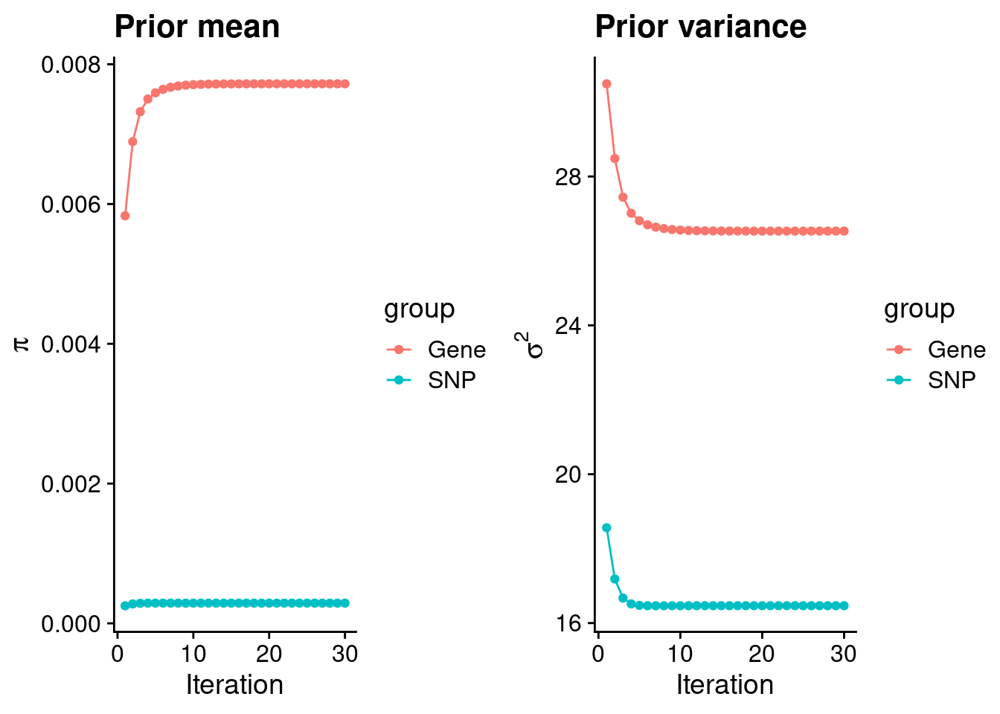
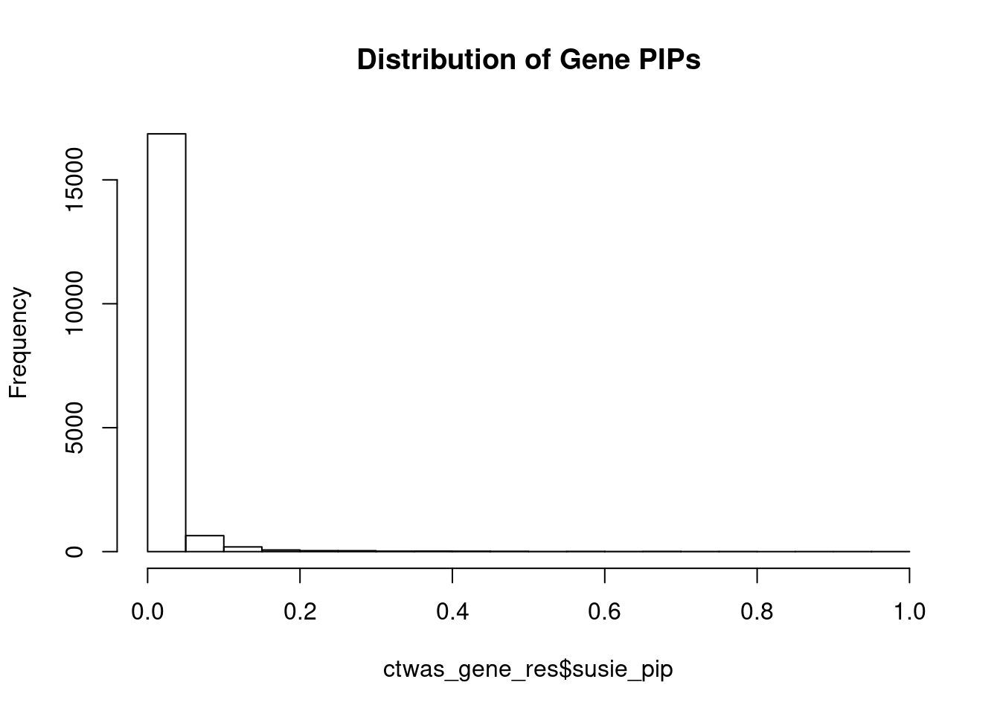
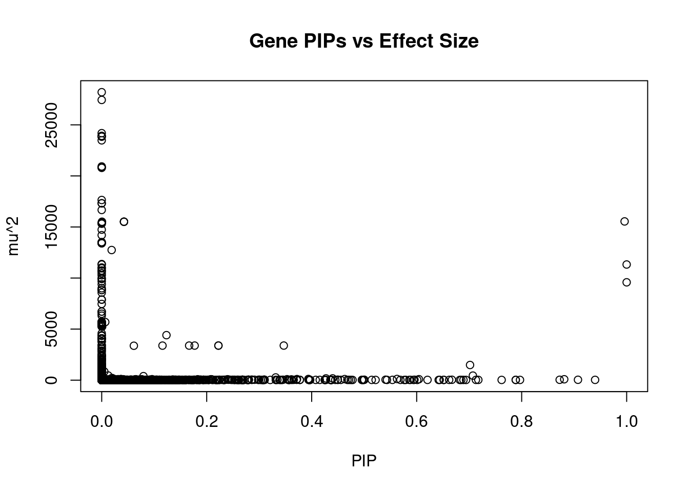
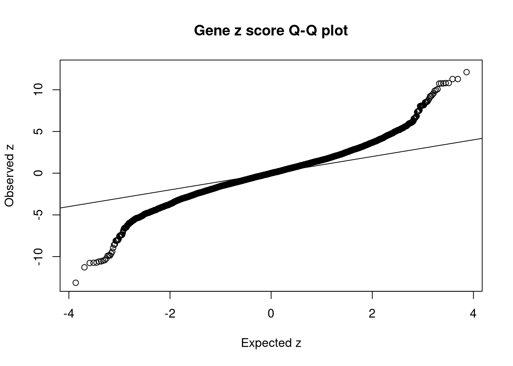
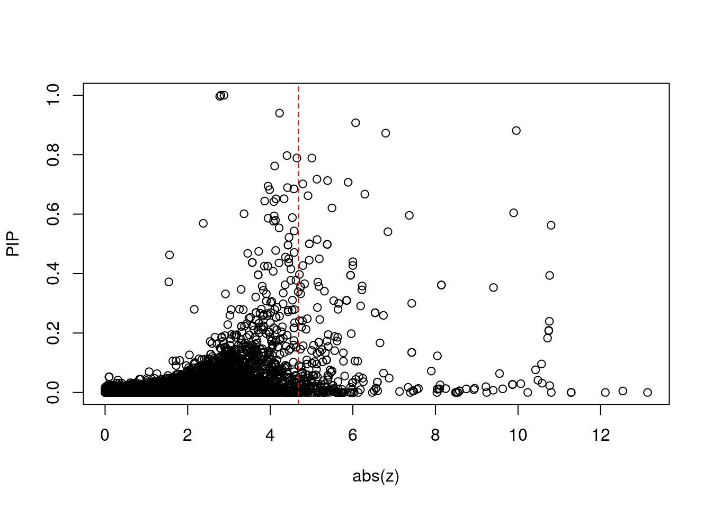
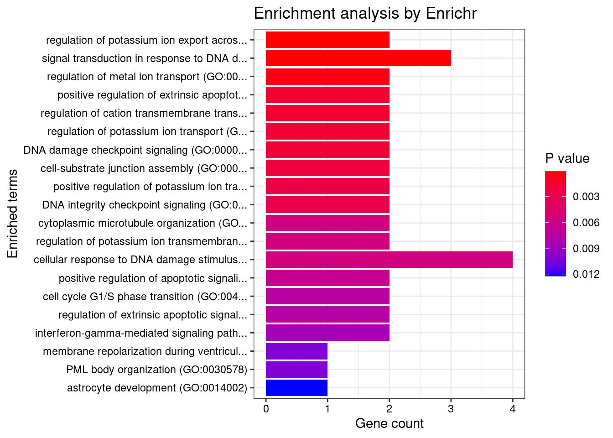
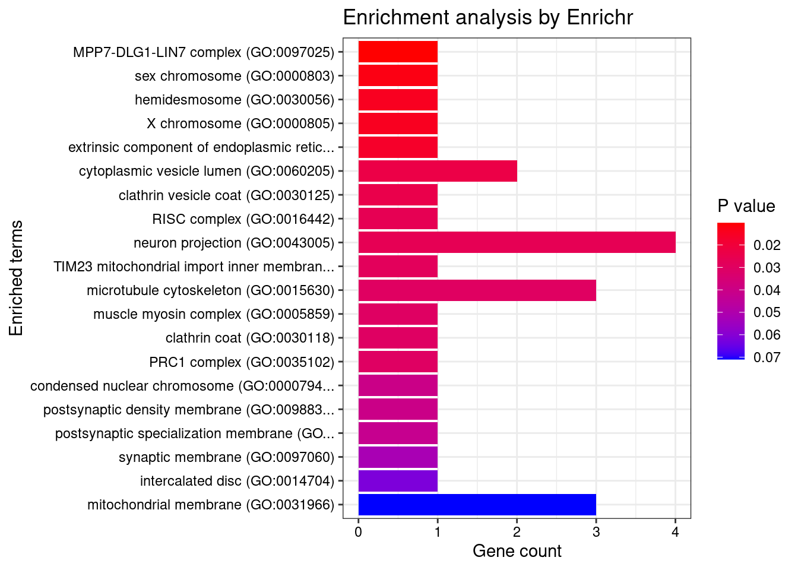
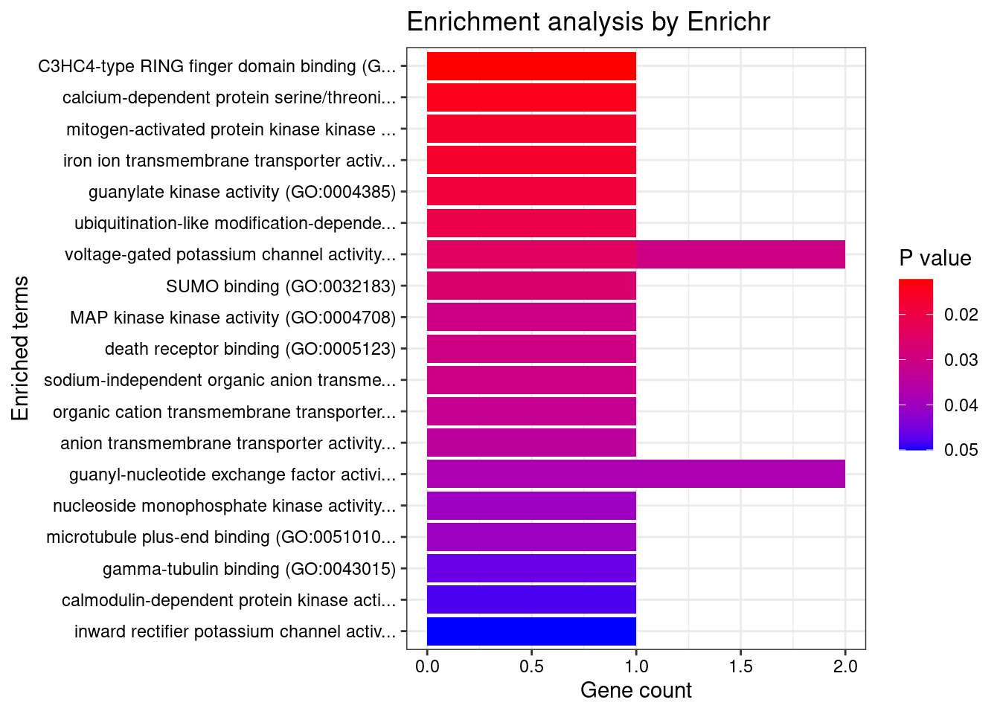
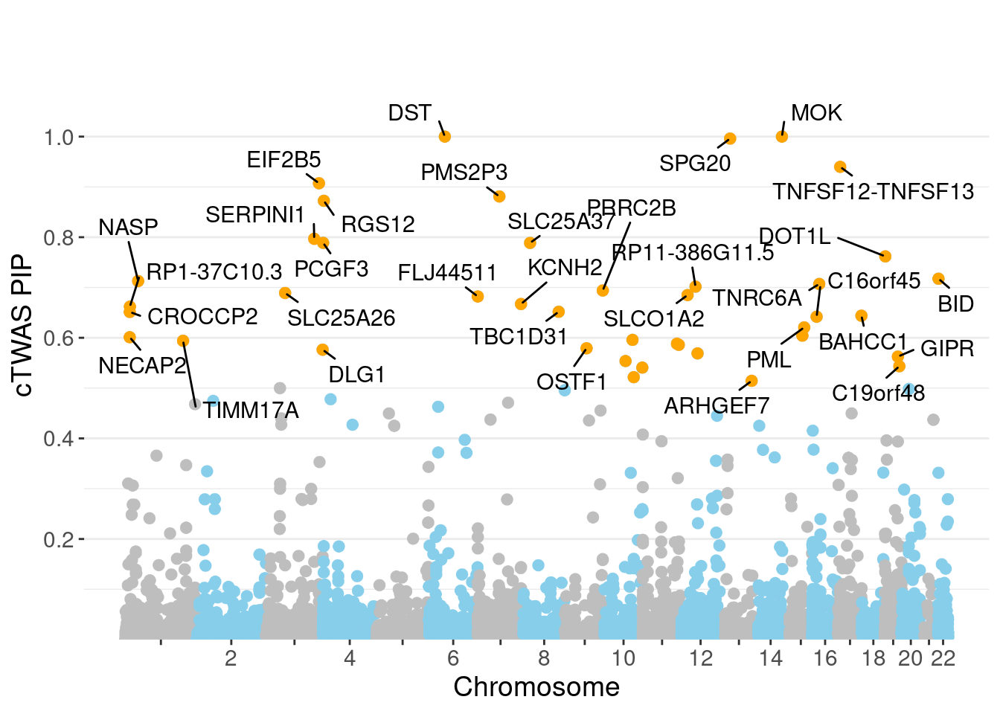
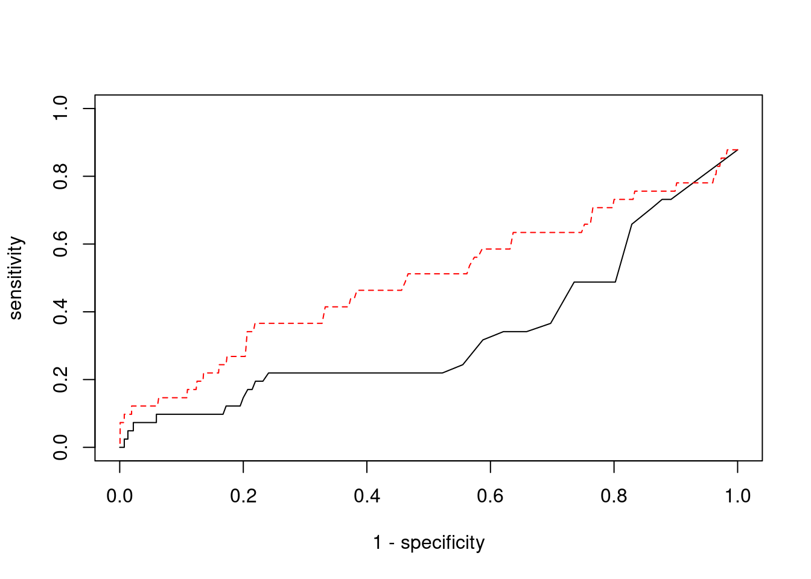

Last updated: 2022-02-22
Checks: 6 1
Knit directory: cTWAS_analysis/
This reproducible R Markdown analysis was created with workflowr (version 1.6.2). The Checks tab describes the reproducibility checks that were applied when the results were created. The Past versions tab lists the development history.
Great! Since the R Markdown file has been committed to the Git repository, you know the exact version of the code that produced these results.
Great job! The global environment was empty. Objects defined in the global environment can affect the analysis in your R Markdown file in unknown ways. For reproduciblity it’s best to always run the code in an empty environment.
The command set.seed(20211220) was run prior to running the code in the R Markdown file. Setting a seed ensures that any results that rely on randomness, e.g. subsampling or permutations, are reproducible.
Great job! Recording the operating system, R version, and package versions is critical for reproducibility.
Nice! There were no cached chunks for this analysis, so you can be confident that you successfully produced the results during this run.
Using absolute paths to the files within your workflowr project makes it difficult for you and others to run your code on a different machine. Change the absolute path(s) below to the suggested relative path(s) to make your code more reproducible.
| absolute | relative |
|---|---|
| /project2/xinhe/shengqian/cTWAS/cTWAS_analysis/data/ | data |
| /project2/xinhe/shengqian/cTWAS/cTWAS_analysis/code/ctwas_config.R | code/ctwas_config.R |
Great! You are using Git for version control. Tracking code development and connecting the code version to the results is critical for reproducibility.
The results in this page were generated with repository version 1058990. See the Past versions tab to see a history of the changes made to the R Markdown and HTML files.
Note that you need to be careful to ensure that all relevant files for the analysis have been committed to Git prior to generating the results (you can use wflow_publish or wflow_git_commit). workflowr only checks the R Markdown file, but you know if there are other scripts or data files that it depends on. Below is the status of the Git repository when the results were generated:
Ignored files:
Ignored: .ipynb_checkpoints/
Untracked files:
Untracked: Rplot.png
Untracked: analysis/.ipynb_checkpoints/
Untracked: analysis/Glucose_Adipose_Subcutaneous.Rmd
Untracked: analysis/Glucose_Adipose_Visceral_Omentum.Rmd
Untracked: analysis/Splicing_Test.Rmd
Untracked: code/.ipynb_checkpoints/
Untracked: code/AF_out/
Untracked: code/BMI_S_out/
Untracked: code/BMI_out/
Untracked: code/Glucose_out/
Untracked: code/LDL_S_out/
Untracked: code/T2D_out/
Untracked: code/ctwas_config.R
Untracked: code/mapping.R
Untracked: code/out/
Untracked: code/run_AF_analysis.sbatch
Untracked: code/run_AF_analysis.sh
Untracked: code/run_AF_ctwas_rss_LDR.R
Untracked: code/run_BMI_analysis.sbatch
Untracked: code/run_BMI_analysis.sh
Untracked: code/run_BMI_analysis_S.sbatch
Untracked: code/run_BMI_analysis_S.sh
Untracked: code/run_BMI_ctwas_rss_LDR.R
Untracked: code/run_BMI_ctwas_rss_LDR_S.R
Untracked: code/run_Glucose_analysis.sbatch
Untracked: code/run_Glucose_analysis.sh
Untracked: code/run_Glucose_ctwas_rss_LDR.R
Untracked: code/run_LDL_analysis_S.sbatch
Untracked: code/run_LDL_analysis_S.sh
Untracked: code/run_LDL_ctwas_rss_LDR_S.R
Untracked: code/run_T2D_analysis.sbatch
Untracked: code/run_T2D_analysis.sh
Untracked: code/run_T2D_ctwas_rss_LDR.R
Untracked: data/.ipynb_checkpoints/
Untracked: data/AF/
Untracked: data/BMI/
Untracked: data/BMI_S/
Untracked: data/Glucose/
Untracked: data/LDL_S/
Untracked: data/T2D/
Untracked: data/TEST/
Untracked: data/UKBB/
Untracked: data/UKBB_SNPs_Info.text
Untracked: data/gene_OMIM.txt
Untracked: data/gene_pip_0.8.txt
Untracked: data/mashr_Heart_Atrial_Appendage.db
Untracked: data/mashr_sqtl/
Untracked: data/summary_known_genes_annotations.xlsx
Untracked: data/untitled.txt
Unstaged changes:
Modified: analysis/BMI_Brain_Cortex.Rmd
Modified: analysis/LDL_Liver_S.Rmd
Modified: analysis/index.Rmd
Note that any generated files, e.g. HTML, png, CSS, etc., are not included in this status report because it is ok for generated content to have uncommitted changes.
These are the previous versions of the repository in which changes were made to the R Markdown (analysis/BMI_Brain_Substantia_nigra_S.Rmd) and HTML (docs/BMI_Brain_Substantia_nigra_S.html) files. If you’ve configured a remote Git repository (see ?wflow_git_remote), click on the hyperlinks in the table below to view the files as they were in that past version.
| File | Version | Author | Date | Message |
|---|---|---|---|---|
| Rmd | 1058990 | sq-96 | 2022-02-22 | update |
#number of imputed weights
nrow(qclist_all)[1] 17941#number of imputed weights by chromosome
table(qclist_all$chr)
1 2 3 4 5 6 7 8 9 10 11 12 13 14 15 16
1660 1259 1029 722 677 898 1022 619 742 824 1064 869 349 624 606 843
17 18 19 20 21 22
1196 235 1302 618 253 530 #number of imputed weights without missing variants
sum(qclist_all$nmiss==0)[1] 16639#proportion of imputed weights without missing variants
mean(qclist_all$nmiss==0)[1] 0.9274#add z scores to results
load(paste0(results_dir, "/", analysis_id, "_expr_z_gene.Rd"))
ctwas_gene_res$z <- z_gene[ctwas_gene_res$intron_id,]$z
z_snp <- z_snp[z_snp$id %in% ctwas_snp_res$id,]
ctwas_snp_res$z <- z_snp$z[match(ctwas_snp_res$id, z_snp$id)]
#merge gene and snp results with added information
ctwas_snp_res$genename=NA
ctwas_snp_res$gene_type=NA
ctwas_snp_res$intron_id=NA
ctwas_res <- rbind(ctwas_gene_res,
ctwas_snp_res[,colnames(ctwas_gene_res)])
#get number of eQTL for geens
num_eqtl <- c()
for (i in 1:22){
load(paste0(results_dir, "/", analysis_id, "_expr_chr", i, ".exprqc.Rd"))
num_eqtl <- c(num_eqtl, unlist(lapply(wgtlist, nrow)))
}
ctwas_gene_res$num_eqtl <- num_eqtl[ctwas_gene_res$intron_id]
#store columns to report
report_cols <- colnames(ctwas_gene_res)[!(colnames(ctwas_gene_res) %in% c("type", "region_tag1", "region_tag2", "cs_index", "gene_type", "z_flag", "id", "chrom", "pos"))]
first_cols <- c("genename", "region_tag")
report_cols <- c(first_cols, report_cols[!(report_cols %in% first_cols)])
report_cols_snps <- c("id", report_cols[-1])
report_cols_snps <- report_cols_snps[!(report_cols_snps %in% "num_eqtl")]
#get number of SNPs from s1 results; adjust for thin argument
ctwas_res_s1 <- data.table::fread(paste0(results_dir, "/", analysis_id, "_ctwas.s1.susieIrss.txt"))
n_snps <- sum(ctwas_res_s1$type=="SNP")/thin
rm(ctwas_res_s1)
#estimated group prior
estimated_group_prior <- group_prior_rec[,ncol(group_prior_rec)]
names(estimated_group_prior) <- c("gene", "snp")
estimated_group_prior["snp"] <- estimated_group_prior["snp"]*thin #adjust parameter to account for thin argument
print(estimated_group_prior) gene snp
0.0077201 0.0002893 #estimated group prior variance
estimated_group_prior_var <- group_prior_var_rec[,ncol(group_prior_var_rec)]
names(estimated_group_prior_var) <- c("gene", "snp")
print(estimated_group_prior_var) gene snp
26.53 16.47 #report sample size
print(sample_size)[1] 336107#report group size
group_size <- c(nrow(ctwas_gene_res), n_snps)
print(group_size)[1] 17941 7535010#estimated group PVE
estimated_group_pve <- estimated_group_prior_var*estimated_group_prior*group_size/sample_size #check PVE calculation
names(estimated_group_pve) <- c("gene", "snp")
print(estimated_group_pve) gene snp
0.01093 0.10681 #compare sum(PIP*mu2/sample_size) with above PVE calculation
c(sum(ctwas_gene_res$PVE),sum(ctwas_snp_res$PVE))[1] 0.155 16.092
genename region_tag susie_pip mu2 PVE
17781 MOK 14_53 1.0000 9581.22 2.851e-02
17576 DST 6_42 1.0000 11325.01 3.369e-02
17702 SPG20 13_13 0.9961 15543.69 4.606e-02
17790 TNFSF12-TNFSF13 17_7 0.9399 29.11 8.139e-05
17498 EIF2B5 3_113 0.9073 38.06 1.027e-04
17599 PMS2P3 7_48 0.8810 86.89 2.278e-04
17540 RGS12 4_4 0.8723 37.67 9.778e-05
3625 SERPINI1 3_103 0.7968 23.94 5.676e-05
3805 PCGF3 4_2 0.7888 24.68 5.792e-05
7128 SLC25A37 8_24 0.7886 27.02 6.339e-05
14809 DOT1L 19_3 0.7618 23.25 5.271e-05
16862 BID 22_2 0.7175 27.78 5.930e-05
524 NASP 1_28 0.7128 27.17 5.762e-05
12854 TNRC6A 16_21 0.7071 446.99 9.403e-04
17659 RP11-386G11.5 12_31 0.7017 1484.82 3.100e-03
8195 PRRC2B 9_69 0.6941 22.21 4.586e-05
3263 SLC25A26 3_45 0.6891 24.24 4.970e-05
10318 SLCO1A2 12_16 0.6849 25.49 5.194e-05
5985 FLJ44511 7_1 0.6822 22.46 4.558e-05
6911 KCNH2 7_93 0.6671 39.68 7.875e-05
intron_id z num_eqtl
17781 intron_14_102265912_102283478 2.804 1
17576 intron_6_56464756_56466078 2.881 1
17702 intron_13_36312477_36313968 2.776 1
17790 intron_17_7559702_7560049 -4.225 1
17498 intron_3_184278313_184283785 6.068 2
17599 intron_7_75514779_75515718 9.959 1
17540 intron_4_3293099_3316070 6.796 1
3625 intron_3_167735823_167789111 -4.405 2
3805 intron_4_731110_732400 -4.645 2
7128 intron_8_23529212_23566108 5.008 1
14809 intron_19_2199939_2202700 4.106 1
16862 intron_22_17739488_17773610 5.130 1
524 intron_1_45600457_45602255 5.388 1
12854 intron_16_24730300_24750726 5.887 1
17659 intron_12_49005543_49005743 -4.788 1
8195 intron_9_131488096_131491422 3.949 1
3263 intron_3_66263379_66304453 -4.417 1
10318 intron_12_21319579_21324594 -4.572 1
5985 intron_7_524280_524854 3.984 2
6911 intron_7_150951120_150951448 -6.291 1
genename region_tag susie_pip mu2 PVE
17371 MMP23B 1_1 0.000e+00 28198 0.000e+00
17375 NADK 1_1 0.000e+00 27440 0.000e+00
15171 MAST3 19_14 0.000e+00 24187 0.000e+00
15169 MAST3 19_14 0.000e+00 23926 0.000e+00
15170 MAST3 19_14 0.000e+00 23868 0.000e+00
17642 BDNF-AS 11_19 0.000e+00 23839 0.000e+00
15172 MAST3 19_14 0.000e+00 23484 0.000e+00
9798 MRPL21 11_38 4.880e-10 20928 3.039e-11
9802 IGHMBP2 11_38 1.722e-07 20831 1.068e-08
9801 IGHMBP2 11_38 6.743e-07 20789 4.171e-08
2449 PLCL1 2_117 1.001e-08 17642 5.257e-10
3165 HEMK1 3_35 0.000e+00 17319 0.000e+00
3164 HEMK1 3_35 0.000e+00 17318 0.000e+00
17473 WDSUB1 2_96 0.000e+00 16665 0.000e+00
17702 SPG20 13_13 9.961e-01 15544 4.606e-02
17703 SPG20 13_13 5.563e-04 15516 2.568e-05
17704 SPG20 13_13 4.241e-02 15514 1.958e-03
17705 SPG20 13_13 4.241e-02 15514 1.958e-03
17706 SPG20 13_13 4.241e-02 15514 1.958e-03
17380 GNB1 1_1 0.000e+00 15433 0.000e+00
intron_id z num_eqtl
17371 intron_1_1676846_1692449 4.905 1
17375 intron_1_1755476_1756258 -4.601 1
15171 intron_19_18147017_18147443 -5.270 2
15169 intron_19_18107618_18121685 5.673 1
15170 intron_19_18110366_18110652 5.647 1
17642 intron_11_27659228_27676982 -1.202 1
15172 intron_19_18147044_18147443 5.187 2
9798 intron_11_68898012_68900535 4.240 2
9802 intron_11_68930434_68933299 -4.493 1
9801 intron_11_68929357_68933299 4.575 2
2449 intron_2_197805339_198001952 -5.642 1
3165 intron_3_50577573_50577826 4.701 1
3164 intron_3_50572208_50577052 -4.704 1
17473 intron_2_159257985_159259810 4.164 1
17702 intron_13_36312477_36313968 2.776 1
17703 intron_13_36312477_36314227 -2.722 2
17704 intron_13_36335832_36346225 -2.819 1
17705 intron_13_36335832_36346240 -2.819 1
17706 intron_13_36335832_36346582 2.819 1
17380 intron_1_1839238_1890820 5.351 1 genename region_tag susie_pip mu2 PVE
17702 SPG20 13_13 0.99607 15543.69 0.0460647
17576 DST 6_42 1.00000 11325.01 0.0336945
17781 MOK 14_53 1.00000 9581.22 0.0285065
1369 TATDN3 1_108 0.34685 3387.57 0.0034958
17659 RP11-386G11.5 12_31 0.70166 1484.82 0.0030997
1366 TATDN3 1_108 0.22233 3386.80 0.0022403
1368 TATDN3 1_108 0.22233 3386.80 0.0022403
17705 SPG20 13_13 0.04241 15513.67 0.0019577
17704 SPG20 13_13 0.04241 15513.67 0.0019577
17706 SPG20 13_13 0.04241 15513.67 0.0019577
1364 TATDN3 1_108 0.17705 3385.74 0.0017834
1365 TATDN3 1_108 0.16655 3385.60 0.0016776
17555 TMEM161B-AS1 5_52 0.12335 4407.43 0.0016175
1359 NSL1 1_108 0.11578 3381.75 0.0011649
12854 TNRC6A 16_21 0.70705 446.99 0.0009403
5247 PGBD1 6_22 0.01893 12742.78 0.0007175
1367 TATDN3 1_108 0.06123 3370.79 0.0006141
8749 BTAF1 10_59 0.33147 267.47 0.0002638
17599 PMS2P3 7_48 0.88105 86.89 0.0002278
3208 ITIH4 3_36 0.43989 173.74 0.0002274
intron_id z num_eqtl
17702 intron_13_36312477_36313968 2.776 1
17576 intron_6_56464756_56466078 2.881 1
17781 intron_14_102265912_102283478 2.804 1
1369 intron_1_212812328_212815013 3.295 1
17659 intron_12_49005543_49005743 -4.788 1
1366 intron_1_212807848_212812227 -3.301 1
1368 intron_1_212807848_212812251 -3.301 1
17705 intron_13_36335832_36346240 -2.819 1
17704 intron_13_36335832_36346225 -2.819 1
17706 intron_13_36335832_36346582 2.819 1
1364 intron_1_212804429_212804596 3.300 1
1365 intron_1_212804651_212807736 3.301 1
17555 intron_5_88270585_88282042 -8.048 1
1359 intron_1_212738686_212739534 -3.259 1
12854 intron_16_24730300_24750726 5.887 1
5247 intron_6_28281918_28283776 -3.377 1
1367 intron_1_212807848_212812248 3.365 2
8749 intron_10_91996570_91997080 -2.915 1
17599 intron_7_75514779_75515718 9.959 1
3208 intron_3_52818536_52819393 6.000 2 genename region_tag susie_pip mu2 PVE
17641 BDNF-AS 11_19 0.000e+00 9001.51 0.000e+00
3145 RBM6 3_35 4.921e-03 843.54 1.235e-05
17640 BDNF-AS 11_19 0.000e+00 9677.57 0.000e+00
1678 DNAJC27-AS1 2_15 1.074e-04 191.78 6.129e-08
1679 DNAJC27-AS1 2_15 1.074e-04 191.78 6.129e-08
1680 DNAJC27-AS1 2_15 1.074e-04 191.78 6.129e-08
3147 RBM6 3_35 2.016e-13 156.43 9.383e-17
15610 GIPR 19_32 5.626e-01 116.75 1.954e-04
12923 INO80E 16_24 2.299e-02 96.99 6.635e-06
15609 GIPR 19_32 3.937e-01 115.96 1.358e-04
12906 SH2B1 16_23 2.396e-01 87.23 6.217e-05
12905 ATXN2L 16_23 2.090e-01 86.83 5.400e-05
12904 ATXN2L 16_23 2.076e-01 86.81 5.361e-05
12902 RP11-57A19.4 16_23 1.828e-01 86.79 4.720e-05
1182 SEC16B 1_87 3.122e-02 95.87 8.907e-06
12896 SULT1A2 16_23 9.591e-02 94.94 2.709e-05
12887 CLN3 16_23 4.117e-02 86.92 1.065e-05
12897 SULT1A2 16_23 7.622e-02 92.01 2.086e-05
5457 C6orf106 6_28 2.666e-05 121.52 9.637e-09
12901 SULT1A1 16_23 2.944e-02 81.25 7.117e-06
intron_id z num_eqtl
17641 intron_11_27658462_27659171 -13.14 1
3145 intron_3_49999513_50046716 12.54 1
17640 intron_11_27640005_27659171 12.11 1
1678 intron_2_24972232_24972626 -11.29 1
1679 intron_2_24972232_24979060 11.29 1
1680 intron_2_24972232_25001415 11.29 1
3147 intron_3_50047326_50048245 10.81 2
15610 intron_19_45677779_45677906 10.80 1
12923 intron_16_30001040_30005221 -10.77 1
15609 intron_19_45677108_45677710 10.77 1
12906 intron_16_28869383_28871780 10.76 1
12905 intron_16_28835399_28835549 -10.74 1
12904 intron_16_28835399_28835546 10.74 1
12902 intron_16_28715434_28723164 -10.72 1
1182 intron_1_177932569_177932698 -10.59 1
12896 intron_16_28592443_28593252 -10.57 1
12887 intron_16_28487541_28487662 -10.48 1
12897 intron_16_28592481_28593252 -10.42 2
5457 intron_6_34654779_34696446 -10.24 1
12901 intron_16_28620133_28623131 10.07 1
[1] 0.01728 genename region_tag susie_pip mu2 PVE
17641 BDNF-AS 11_19 0.000e+00 9001.51 0.000e+00
3145 RBM6 3_35 4.921e-03 843.54 1.235e-05
17640 BDNF-AS 11_19 0.000e+00 9677.57 0.000e+00
1678 DNAJC27-AS1 2_15 1.074e-04 191.78 6.129e-08
1679 DNAJC27-AS1 2_15 1.074e-04 191.78 6.129e-08
1680 DNAJC27-AS1 2_15 1.074e-04 191.78 6.129e-08
3147 RBM6 3_35 2.016e-13 156.43 9.383e-17
15610 GIPR 19_32 5.626e-01 116.75 1.954e-04
12923 INO80E 16_24 2.299e-02 96.99 6.635e-06
15609 GIPR 19_32 3.937e-01 115.96 1.358e-04
12906 SH2B1 16_23 2.396e-01 87.23 6.217e-05
12905 ATXN2L 16_23 2.090e-01 86.83 5.400e-05
12904 ATXN2L 16_23 2.076e-01 86.81 5.361e-05
12902 RP11-57A19.4 16_23 1.828e-01 86.79 4.720e-05
1182 SEC16B 1_87 3.122e-02 95.87 8.907e-06
12896 SULT1A2 16_23 9.591e-02 94.94 2.709e-05
12887 CLN3 16_23 4.117e-02 86.92 1.065e-05
12897 SULT1A2 16_23 7.622e-02 92.01 2.086e-05
5457 C6orf106 6_28 2.666e-05 121.52 9.637e-09
12901 SULT1A1 16_23 2.944e-02 81.25 7.117e-06
intron_id z num_eqtl
17641 intron_11_27658462_27659171 -13.14 1
3145 intron_3_49999513_50046716 12.54 1
17640 intron_11_27640005_27659171 12.11 1
1678 intron_2_24972232_24972626 -11.29 1
1679 intron_2_24972232_24979060 11.29 1
1680 intron_2_24972232_25001415 11.29 1
3147 intron_3_50047326_50048245 10.81 2
15610 intron_19_45677779_45677906 10.80 1
12923 intron_16_30001040_30005221 -10.77 1
15609 intron_19_45677108_45677710 10.77 1
12906 intron_16_28869383_28871780 10.76 1
12905 intron_16_28835399_28835549 -10.74 1
12904 intron_16_28835399_28835546 10.74 1
12902 intron_16_28715434_28723164 -10.72 1
1182 intron_1_177932569_177932698 -10.59 1
12896 intron_16_28592443_28593252 -10.57 1
12887 intron_16_28487541_28487662 -10.48 1
12897 intron_16_28592481_28593252 -10.42 2
5457 intron_6_34654779_34696446 -10.24 1
12901 intron_16_28620133_28623131 10.07 1#number of genes for gene set enrichment
length(genes)[1] 41Uploading data to Enrichr... Done.
Querying GO_Biological_Process_2021... Done.
Querying GO_Cellular_Component_2021... Done.
Querying GO_Molecular_Function_2021... Done.
Parsing results... Done.
[1] "GO_Biological_Process_2021"
Term
1 regulation of potassium ion export across plasma membrane (GO:1903764)
2 signal transduction in response to DNA damage (GO:0042770)
Overlap Adjusted.P.value Genes
1 2/7 0.03345 KCNH2;DLG1
2 3/52 0.03345 DOT1L;BID;HINFP
[1] "GO_Cellular_Component_2021"
[1] Term Overlap Adjusted.P.value Genes
<0 rows> (or 0-length row.names)
[1] "GO_Molecular_Function_2021"
[1] Term Overlap Adjusted.P.value Genes
<0 rows> (or 0-length row.names) Description FDR Ratio
5 Body Weight 0.03264 2/20
59 Progressive cerebellar ataxia 0.03264 1/20
82 Familial encephalopathy with neuroserpin inclusion bodies 0.03264 1/20
89 NEUROPATHY, HEREDITARY SENSORY AND AUTONOMIC, TYPE VI 0.03264 1/20
92 EPIDERMOLYSIS BULLOSA SIMPLEX, AUTOSOMAL RECESSIVE 2 0.03264 1/20
93 COMBINED OXIDATIVE PHOSPHORYLATION DEFICIENCY 28 0.03264 1/20
19 Cardiac Arrest 0.05763 1/20
27 Muscle Spasticity 0.05763 1/20
35 Schizophrenia 0.05763 6/20
38 Torsades de Pointes 0.05763 1/20
BgRatio
5 15/9703
59 1/9703
82 1/9703
89 1/9703
92 1/9703
93 1/9703
19 5/9703
27 5/9703
35 883/9703
38 3/9703Loading the functional categories...
Loading the ID list...
Loading the reference list...
Performing the enrichment analysis...Warning in oraEnrichment(interestGeneList, referenceGeneList, geneSet, minNum =
minNum, : No significant gene set is identified based on FDR 0.05!NULLWarning: ggrepel: 8 unlabeled data points (too many overlaps). Consider
increasing max.overlaps
#number of genes in known annotations
print(length(known_annotations))[1] 41#number of genes in known annotations with imputed expression
print(sum(known_annotations %in% ctwas_gene_res$genename))[1] 16#significance threshold for TWAS
print(sig_thresh)[1] 4.686#number of ctwas genes
length(ctwas_genes)[1] 7#number of TWAS genes
length(twas_genes)[1] 310#show novel genes (ctwas genes with not in TWAS genes)
ctwas_gene_res[ctwas_gene_res$genename %in% novel_genes,report_cols] genename region_tag susie_pip mu2 PVE
11838 MOK 14_54 3.877e-03 7.674 8.853e-08
17573 DST 6_42 0.000e+00 195.435 0.000e+00
17574 DST 6_42 0.000e+00 1543.673 0.000e+00
17575 DST 6_42 0.000e+00 1552.793 0.000e+00
17576 DST 6_42 1.000e+00 11325.007 3.369e-02
17577 DST 6_42 0.000e+00 368.171 0.000e+00
17702 SPG20 13_13 9.961e-01 15543.691 4.606e-02
17703 SPG20 13_13 5.563e-04 15515.542 2.568e-05
17704 SPG20 13_13 4.241e-02 15513.667 1.958e-03
17705 SPG20 13_13 4.241e-02 15513.667 1.958e-03
17706 SPG20 13_13 4.241e-02 15513.667 1.958e-03
17772 MOK 14_53 6.280e-05 9383.727 1.753e-06
17773 MOK 14_53 1.009e-05 70.695 2.123e-09
17774 MOK 14_53 9.967e-06 70.396 2.088e-09
17775 MOK 14_53 5.234e-06 2072.466 3.228e-08
17776 MOK 14_53 5.234e-06 2072.466 3.228e-08
17777 MOK 14_53 5.234e-06 2072.466 3.228e-08
17778 MOK 14_53 5.040e-06 6505.599 9.755e-08
17779 MOK 14_53 6.032e-06 4031.677 7.236e-08
17780 MOK 14_53 5.941e-06 4039.599 7.140e-08
17781 MOK 14_53 1.000e+00 9581.221 2.851e-02
17790 TNFSF12-TNFSF13 17_7 9.399e-01 29.105 8.139e-05
intron_id z num_eqtl
11838 intron_14_102233789_102250812 -1.2728 1
17573 intron_6_56463156_56463565 0.7310 1
17574 intron_6_56463764_56464685 -1.0970 2
17575 intron_6_56463764_56466078 1.1002 2
17576 intron_6_56464756_56466078 2.8806 1
17577 intron_6_56598006_56600069 -3.7368 1
17702 intron_13_36312477_36313968 2.7757 1
17703 intron_13_36312477_36314227 -2.7224 2
17704 intron_13_36335832_36346225 -2.8188 1
17705 intron_13_36335832_36346240 -2.8188 1
17706 intron_13_36335832_36346582 2.8188 1
17772 intron_14_102226408_102232535 2.9326 1
17773 intron_14_102229657_102231707 -1.2704 1
17774 intron_14_102229657_102232535 1.2592 1
17775 intron_14_102250987_102251756 0.1934 1
17776 intron_14_102250990_102251756 0.1934 1
17777 intron_14_102251804_102251917 0.1934 1
17778 intron_14_102251995_102263546 0.7714 2
17779 intron_14_102251995_102283478 0.1647 1
17780 intron_14_102263616_102283478 -0.1437 2
17781 intron_14_102265912_102283478 2.8041 1
17790 intron_17_7559702_7560049 -4.2247 1#sensitivity / recall
print(sensitivity)ctwas TWAS
0.000 0.122 #specificity
print(specificity) ctwas TWAS
0.9974 0.9643 #precision / PPV
print(precision) ctwas TWAS
0.00000 0.01613 
sessionInfo()R version 3.6.1 (2019-07-05)
Platform: x86_64-pc-linux-gnu (64-bit)
Running under: Scientific Linux 7.4 (Nitrogen)
Matrix products: default
BLAS/LAPACK: /software/openblas-0.2.19-el7-x86_64/lib/libopenblas_haswellp-r0.2.19.so
locale:
[1] LC_CTYPE=en_US.UTF-8 LC_NUMERIC=C
[3] LC_TIME=en_US.UTF-8 LC_COLLATE=en_US.UTF-8
[5] LC_MONETARY=en_US.UTF-8 LC_MESSAGES=en_US.UTF-8
[7] LC_PAPER=en_US.UTF-8 LC_NAME=C
[9] LC_ADDRESS=C LC_TELEPHONE=C
[11] LC_MEASUREMENT=en_US.UTF-8 LC_IDENTIFICATION=C
attached base packages:
[1] stats4 parallel stats graphics grDevices utils datasets
[8] methods base
other attached packages:
[1] readxl_1.3.1 forcats_0.5.1
[3] stringr_1.4.0 dplyr_1.0.7
[5] purrr_0.3.4 readr_2.1.1
[7] tidyr_1.1.4 tidyverse_1.3.1
[9] tibble_3.1.6 WebGestaltR_0.4.4
[11] disgenet2r_0.99.2 enrichR_3.0
[13] cowplot_1.0.0 ggplot2_3.3.5
[15] EnsDb.Hsapiens.v79_2.99.0 ensembldb_2.8.0
[17] AnnotationFilter_1.8.0 GenomicFeatures_1.36.3
[19] AnnotationDbi_1.46.0 Biobase_2.44.0
[21] GenomicRanges_1.36.1 GenomeInfoDb_1.20.0
[23] IRanges_2.18.1 S4Vectors_0.22.1
[25] BiocGenerics_0.30.0 workflowr_1.6.2
loaded via a namespace (and not attached):
[1] ggbeeswarm_0.6.0 colorspace_2.0-2
[3] rjson_0.2.20 ellipsis_0.3.2
[5] rprojroot_2.0.2 XVector_0.24.0
[7] fs_1.5.2 rstudioapi_0.13
[9] farver_2.1.0 ggrepel_0.9.1
[11] bit64_4.0.5 lubridate_1.8.0
[13] fansi_0.5.0 xml2_1.3.3
[15] codetools_0.2-16 doParallel_1.0.16
[17] cachem_1.0.6 knitr_1.36
[19] jsonlite_1.7.2 apcluster_1.4.8
[21] Cairo_1.5-12.2 Rsamtools_2.0.0
[23] broom_0.7.10 dbplyr_2.1.1
[25] compiler_3.6.1 httr_1.4.2
[27] backports_1.4.1 assertthat_0.2.1
[29] Matrix_1.2-18 fastmap_1.1.0
[31] lazyeval_0.2.2 cli_3.1.0
[33] later_0.8.0 htmltools_0.5.2
[35] prettyunits_1.1.1 tools_3.6.1
[37] igraph_1.2.10 gtable_0.3.0
[39] glue_1.5.1 GenomeInfoDbData_1.2.1
[41] reshape2_1.4.4 doRNG_1.8.2
[43] Rcpp_1.0.7 cellranger_1.1.0
[45] jquerylib_0.1.4 vctrs_0.3.8
[47] Biostrings_2.52.0 svglite_1.2.2
[49] rtracklayer_1.44.4 iterators_1.0.13
[51] xfun_0.29 rvest_1.0.2
[53] lifecycle_1.0.1 rngtools_1.5.2
[55] XML_3.99-0.3 zlibbioc_1.30.0
[57] scales_1.1.1 vroom_1.5.7
[59] hms_1.1.1 promises_1.0.1
[61] ProtGenerics_1.16.0 SummarizedExperiment_1.14.1
[63] yaml_2.2.1 curl_4.3.2
[65] memoise_2.0.1 ggrastr_1.0.1
[67] gdtools_0.1.9 biomaRt_2.40.1
[69] stringi_1.7.6 RSQLite_2.2.8
[71] highr_0.9 foreach_1.5.1
[73] BiocParallel_1.18.0 rlang_0.4.12
[75] pkgconfig_2.0.3 matrixStats_0.57.0
[77] bitops_1.0-7 evaluate_0.14
[79] lattice_0.20-38 GenomicAlignments_1.20.1
[81] labeling_0.4.2 bit_4.0.4
[83] tidyselect_1.1.1 plyr_1.8.6
[85] magrittr_2.0.1 R6_2.5.1
[87] generics_0.1.1 DelayedArray_0.10.0
[89] DBI_1.1.1 haven_2.4.3
[91] pillar_1.6.4 whisker_0.3-2
[93] withr_2.4.3 RCurl_1.98-1.5
[95] modelr_0.1.8 crayon_1.4.2
[97] utf8_1.2.2 tzdb_0.2.0
[99] rmarkdown_2.11 progress_1.2.2
[101] grid_3.6.1 data.table_1.14.2
[103] blob_1.2.2 git2r_0.26.1
[105] reprex_2.0.1 digest_0.6.29
[107] httpuv_1.5.1 munsell_0.5.0
[109] beeswarm_0.2.3 vipor_0.4.5